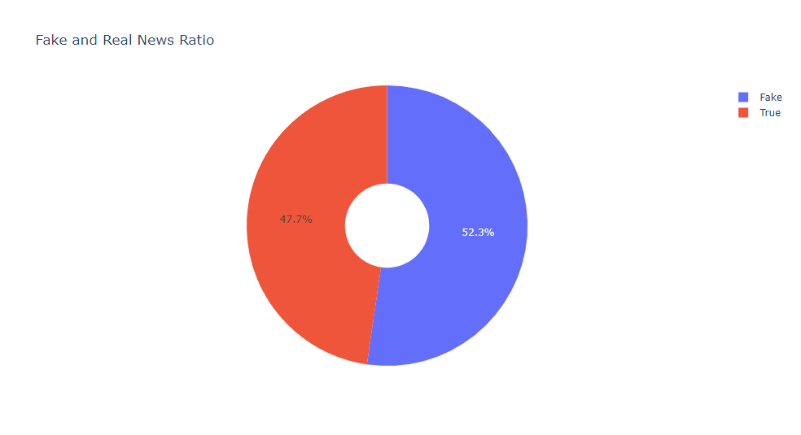

Fake and Real News Data Analysis Project
Exploring Fake and Real News Datasets
In this project, I have performed some exploratory analysis into fake and real
news datasets and performed feature selection and logistic regression to
determine how well the model can perform.
Data Source
Whole Project
Just Code
Visualising the difference in fake and real news:

Confusion Matrix:

Generating a WordCloud: